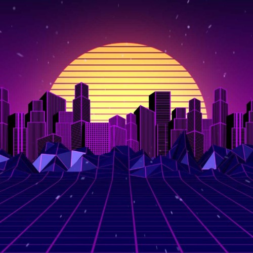

Rock
Un género rebelde impulsado por guitarras distorsionadas, baterías potentes y voces llenas de energía. Desde sus raíces en los años 50, ha evolucionado en decenas de subgéneros, manteniendo siempre su esencia libre, contestataria y capaz de llenar estadios enteros alrededor del mundo.

Disco
El ritmo que definió la vida nocturna de los años 70 con sus líneas de bajo funk, arreglos de cuerdas y luces brillantes. Diseñado exclusivamente para bailar, este género transformó los clubes en templos de autoexpresión, color y movimiento constante bajo las esferas de espejos.

Synth
Un viaje nostálgico hacia el futuro impulsado por sintetizadores analógicos, cajas de ritmo y estéticas de luces de neón. Inspirado en las bandas sonoras y la cultura pop de los años 80, este sonido evoca carreras nocturnas, paisajes cibernéticos y una profunda melancolía retrofuturista.